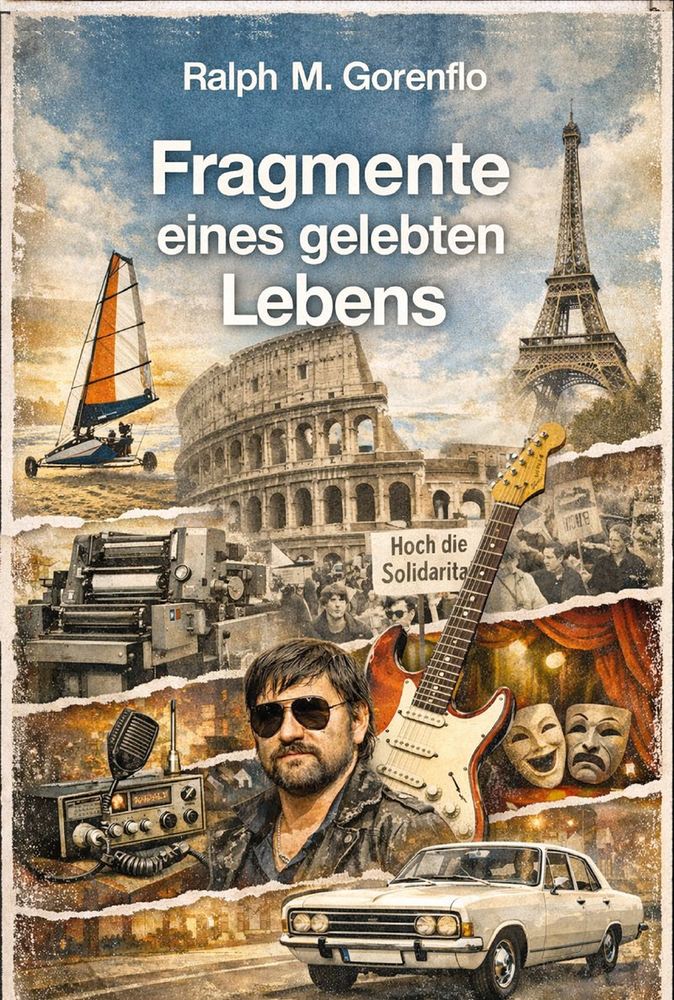

Fragmente eines gelebten Lebens

Ralph M. Gorenflo – „Fragmente eines gelebten Lebens“
Ein Buch voller Erinnerungen, Begegnungen und Geschichten – authentisch, unterhaltsam und mit viel Herz und Humor geschrieben.
Mit „Fragmente eines gelebten Lebens“ legt der Weilburger Autor Ralph M. Gorenflo eine sehr persönliche und zugleich unterhaltsame Rückschau auf sein bewegtes Leben vor. In vielen einzelnen Episoden erzählt er von Kindheit, Jugend und späteren Lebensstationen – mal humorvoll, mal nachdenklich, aber stets nahbar. Der in Rüsselsheim geborene Gorenflo, der heute in Weilburg lebt und sich hier auch kulturell engagiert, schildert seinen Weg vom musikbegeisterten Jugendlichen über Studienjahre bis hin zu vielfältigen beruflichen und kreativen Tätigkeiten. Dabei wird schnell deutlich: Ein geradliniger Lebenslauf war nie sein Ziel – vielmehr folgt das Buch dem roten Faden der Erfahrungen und Begegnungen.
Gorenflo erzählt nicht linear, sondern in Episoden, die wirken wie Anekdoten aus einem gut bestückten Zettelkasten: Kindheitsbasteleien, Beatband-Träume, erste Lieben, Revolutionsnähe und römische Abenteuer. Immer wieder blitzt dabei ein lakonischer Humor auf, der zwischen Selbstironie und milder Melancholie pendelt. Der Autor inszeniert sich als „Sternbild Wassermann“ – ein Getriebener der Ideen, weniger der Vollendung. Das ist Koketterie, aber auch Programm. Zwischen Daniel Cohn-Bendit und Rainer Werner Fassbinder spannt sich der Erfahrungsraum dieser Erinnerungen – und genau darin liegt ihre stille Stärke.
Stilistisch bewegt sich das Buch zwischen feuilletonistischer Plauderei und leicht antiquiertem Bildungsbürger-Ton, der gelegentlich ins Parodistische kippt. Wenn Gorenflo etwa seine eigene Rolle in den Pariser Unruhen von 1968 als halb zufällige Mitläuferschaft reflektiert, zeigt sich plötzlich Tiefenschärfe: Erinnerung wird hier nicht verklärt, sondern vorsichtig zerlegt. Das Werk ist reich bebildert und liebevoll gestaltet, was den Charakter eines persönlichen Erinnerungsalbums unterstreicht.
Erhältlich
bei der Residenzbuchhandlung Weilburg oder direkt beim
Verlag Weilburg-TV – Über dem Hainberg 3, 35781 Weilburg
Preis: 12,80 € (inkl. Versand) – info@weilburg.info